Relatório de Análise da Demanda de Aeronaves¶
1. Introdução¶
O objetivo deste relatório é analisar a relação entre indicadores econômicos e operacionais como a movimentação de passageiros na cidade de Joinville. Inicialmente, foi testada a influência do PIB per capita sobre a movimentação, seguida da exploração de outras variáveis explicativas disponíveis na base de dados municipal. A análise busca identificar quais fatores melhor explicam a variação na movimentação anual de passageiros, utilizando modelos de regressão.
2. Descrição de Dados¶
Foram utilizadas três bases de dados principais: - PIB per capita; - Movimentação Anual de Passageiros; - Indicadores Diversos de Joinville.
Dentre estes se destacam: - PIB per capita; - Movimentação Anual de Passageiros; - População; - Tarifa média; - Yield (R$/KM); - Assentos Comerciais; - Distância média voada.
3. Descrição estatística das variáveis¶
Gráfico de Dispersão¶
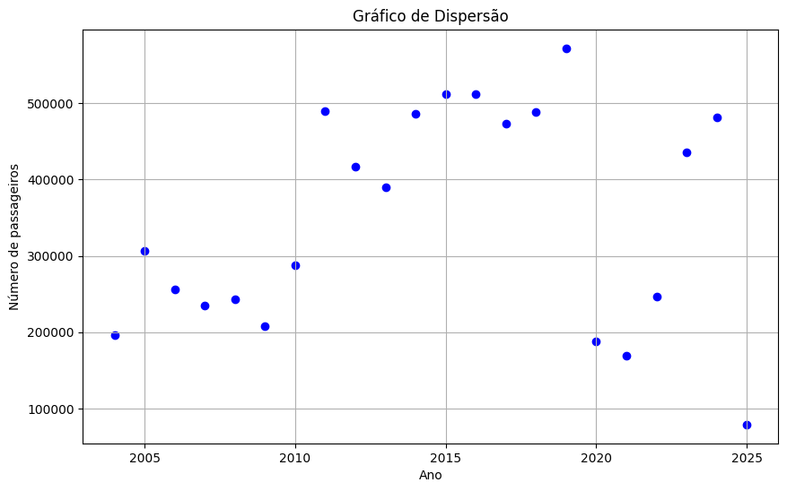
Fonte: Ferreira (2009)
Matriz de Correlação¶

Fonte: Elaborado pelos autores.
Tabela de Correlação¶
| Variável 1 | Variável 2 | Correlação |
|---|---|---|
| População | PIB per capita (R$) | 0.994879 |
| Distância média Voada | Yield (R$/KM) | -0.934800 |
| Assentos Comerc. | Passag. Aeroporto | 0.909036 |
| Distância média Voada | População | 0.893875 |
| Distância média Voada | PIB per capita (R$) | 0.882521 |
4. Formulação dos modelos de regressão¶
4.1. Distância Média de Voo x PIB per capita¶
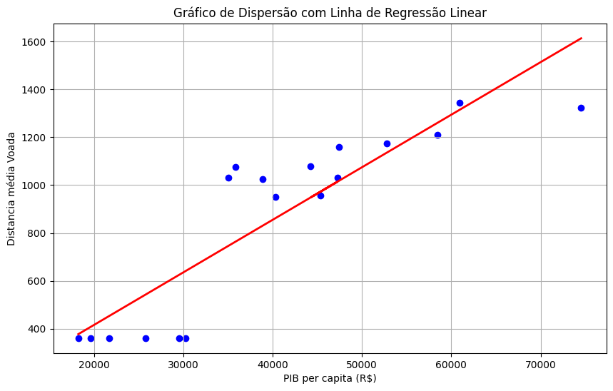
Figura 1: Modelos de regressão utilizando forma funcional linear.
Fonte: Elaborados pelos autores.
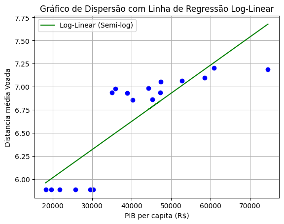
Figura 2: Modelos de regressão utilizando forma funcional log-linear.
Fonte: Elaborados pelos autores.
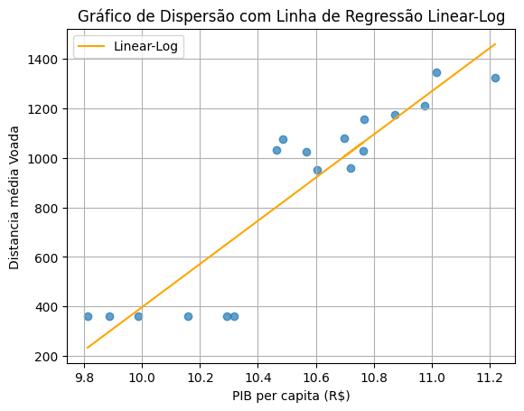
Figura 3: Modelos de regressão utilizando forma funcional linear-log.
Fonte: Elaborados pelos autores.
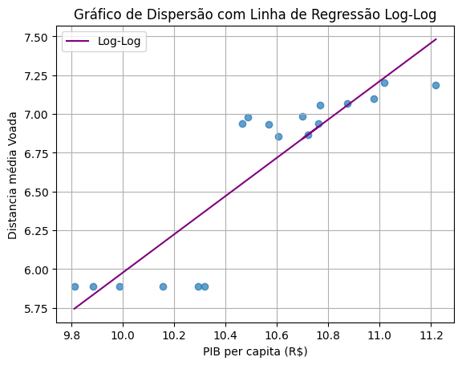
Figura 4: Modelos de regressão utilizando forma funcional log-log.
Fonte: Elaborados pelos autores.
4.2. Distância Média de Voo x Yield (R$/KM)¶
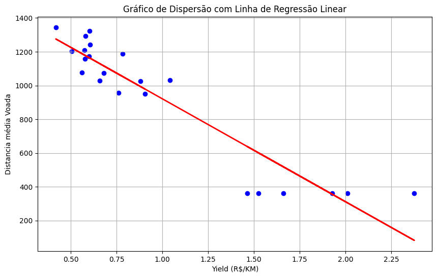
Figura 5: Modelos de regressão utilizando forma funcional linear.
Fonte: Elaborados pelos autores.
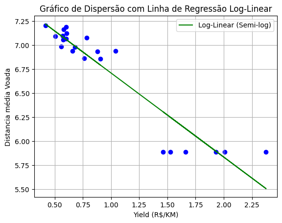
Figura 6: Modelos de regressão utilizando forma funcional log-linear.
Fonte: Elaborados pelos autores.
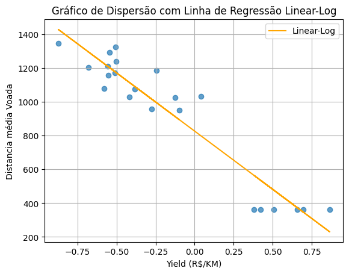
Figura 7: Modelos de regressão utilizando forma funcional linear-log.
Fonte: Elaborados pelos autores.
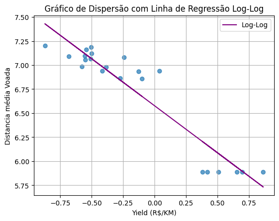
Figura 8: Modelos de regressão utilizando forma funcional log-log.
Fonte: Elaborados pelos autores.
4.4. Passageiros por Ano x Assentos Comerciais¶
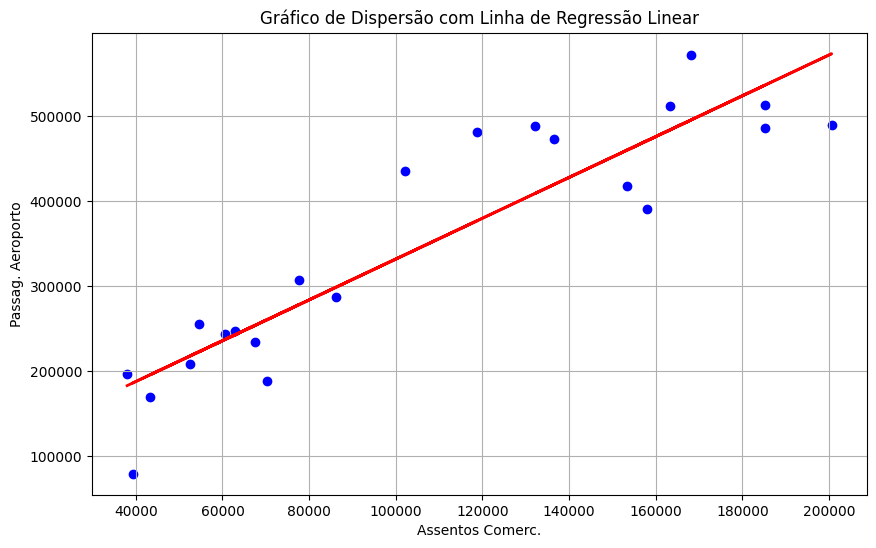
Figura 9: Modelos de regressão utilizando forma funcional linear.
Fonte: Elaborados pelos autores.
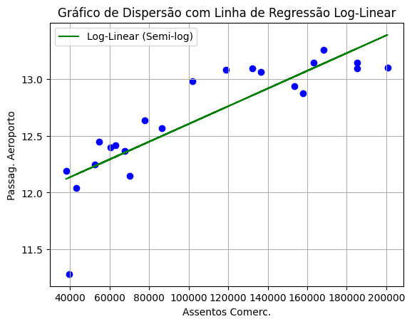
Figura 10: Modelos de regressão utilizando forma funcional log-linear.
Fonte: Elaborados pelos autores.
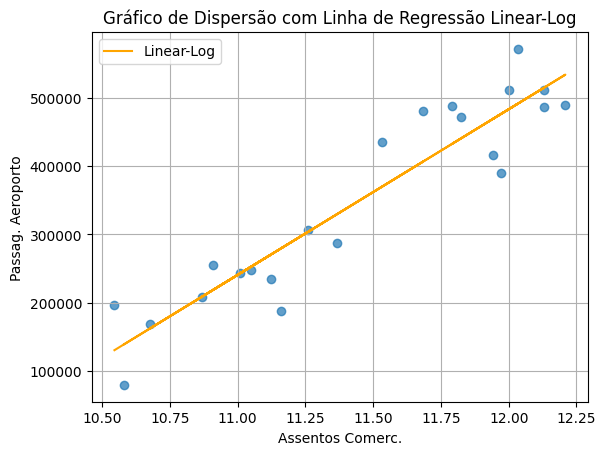
Figura 11: Modelos de regressão utilizando forma funcional linear-log.
Fonte: Elaborados pelos autores.
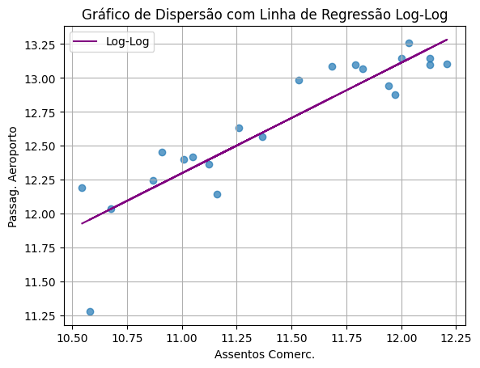
Figura 12: Modelos de regressão utilizando forma funcional log-log.
Fonte: Elaborados pelos autores.
5. Estimativa dos coeficientes utilizando o método dos Mínimos Quadrados Ordinários (OLS)¶
5.1. Distância Média de Voo x PIB per capita¶
- Linear Regression: β₀ = 312.2876, β₁ = 0.0163
- Log-linear Regression: β₀ = 5.8641, β₁ = 2.2719e-05
- Linear-log Regression: β₀ = -4519.3838, β₁ = 521.8931
- Log-log Regression: β₀ = -1.0312, β₁ = 0.7427
5.2. Distância Média de Voo x Yield (R$/KM)¶
- Linear Regression: β₀ = 1530.3733, β₁ = -609.2280
- Log-linear Regression: β₀ = 7.5858, β₁ = -0.8751
- Linear-log Regression: β₀ = 826.8078, β₁ = -689.5150
- Log-log Regression: β₀ = 6.5772, β₁ = -0.9771
5.3. Passageiros por Ano x Assentos Comerciais¶
- Linear Regression: β₀ = 91712.1641, β₁ = 2.3998
- Log-linear Regression: β₀ = 11.8237, β₁ = 7.8127e-06
- Linear-log Regression: β₀ = -2430181.2976, β₁ = 242803.4252
- Log-log Regression: β₀ = 3.3467, β₁ = 0.8138
5.5. Avaliar a significância estatística dos coeficientes¶
6. Verificação das hipóteses clássicas da regressão¶
6.1. Distância Média de Voo x PIB per capita¶
- Teste RESET de Ramsey: estatística = 7.3185, p-valor = 0.0258, df_denom = 2
- Teste de White: 'LM Statistic': 0.1145, 'LM-Test p-valor': 0.9444, 'F-Statistic': 0.0480, 'F-Test p-valor': 0.9533
- Estatística Durbin-Watson: 0.9519
- VIF: [8.4051, 1.0]
6.2. Distância Média de Voo x Yield (R$/KM)¶
- Teste RESET de Ramsey: estatística = 17.3813, p-valor = 0.0002, df_denom = 2
- Teste de White: 'LM Statistic': 6.9790, 'LM-Test p-valor': 0.0305, 'F-Statistic': 4.4139, 'F-Test p-valor': 0.0266
- Estatística Durbin-Watson: 2.5872
- VIF: [4.1327, 1.0]
6.3. Passageiros por Ano x Assentos Comerciais¶
- Teste RESET de Ramsey: estatística = 24.4410, p-valor = 4.9283e-06, df_denom = 2
- Teste de White: 'LM Statistic': 1.3382, 'LM-Test p-valor': 0.5122, 'F-Statistic': 0.6153, 'F-Test p-valor': 0.5509
- Estatística Durbin-Watson: 1.2891
- VIF: [5.0897, 1.0]
Seleção do modelo mais adequado¶
Distância Média de Voo x PIB per capita¶
- Modelo: Linear
- AIC: 240.7139734128535
- BIC: 242.49471692864583
- R-squared: 0.778842704857219
- Adjusted R-squared: 0.7650203739107951
- F-test p-value: 1.2541712620839091e-06
- Modelo: Log-linear
- AIC: 10.174835224971496
- BIC: 11.955578740763825
- R-squared: 0.7123615029231332
- Adjusted R-squared: 0.694384096855829
- F-test p-value: 1.06714862909993e-05
- Modelo: Linear-log
- AIC: 235.81013823190182
- BIC: 237.59088174769414
- R-squared: 0.8315836978488752
- Adjusted R-squared: 0.8210576789644299
- F-test p-value: 1.378631268270841e-07
- Modelo: Log-log
- AIC: 4.259949372544035
- BIC: 6.040692888336364
- R-squared: 0.7929211365361468
- Adjusted R-squared: 0.779978707569656
- F-test p-value: 7.35290757460248e-07
Melhor modelo baseado em AIC: Log-log
Melhor modelo baseado em BIC: Log-log
Melhor modelo baseado em R-squared: Linear-log
Melhor modelo baseado em Adjusted R-squared: Linear-log
Distância Média de Voo x Yield (R$/KM)¶
- Modelo: Linear
- AIC: 280.2605742843522
- BIC: 282.4426591910688
- R-squared: 0.8738519203396552
- Adjusted R-squared: 0.867544516356638
- F-test p-value: 1.9110735388559346e-10
- Modelo: Log-linear
- AIC: -9.801459335730357
- BIC: -7.619374429013725
- R-squared: 0.8837925954207556
- Adjusted R-squared: 0.8779822251917934
- F-test p-value: 8.367580677914155e-11
- Modelo: Linear-log
- AIC: 275.5449031481787
- BIC: 277.72698805489534
- R-squared: 0.8981900577083833
- Adjusted R-squared: 0.8930995605938025
- F-test p-value: 2.2131162671286824e-11
- Modelo: Log-log
- AIC: -9.872584479372435
- BIC: -7.690499572655803
- R-squared: 0.8841676827882137
- Adjusted R-squared: 0.8783760669276244
- F-test p-value: 8.099839771586406e-11
Melhor modelo baseado em AIC: Log-log
Melhor modelo baseado em BIC: Log-log
Melhor modelo baseado em R-squared: Linear-log
Melhor modelo baseado em Adjusted R-squared: Linear-log
Distância Média de Voo x Assentos Comerciais¶
- Modelo: Linear
- AIC: 549.2361704430607
- BIC: 551.4182553497774
- R-squared: 0.8263456680246661
- Adjusted R-squared: 0.8176629514258994
- F-test p-value: 4.788631025703021e-09
- Modelo: Log-linear
- AIC: 6.145537615775552
- BIC: 8.327622522492184
- R-squared: 0.7262275397370973
- Adjusted R-squared: 0.7125389167239522
- F-test p-value: 4.81045935133018e-07
- Modelo: Linear-log
- AIC: 542.3754369239838
- BIC: 544.5575218307005
- R-squared: 0.8728693621983309
- Adjusted R-squared: 0.8665128303082474
- F-test p-value: 2.066297326687235e-10
- Modelo: Log-log
- AIC: -2.2479487719617737
- BIC: -0.06586386524514154
- R-squared: 0.8130623355951515
- Adjusted R-squared: 0.803715452374909
- F-test p-value: 1.0080185169593796e-08
Melhor modelo baseado em AIC: Log-log
Melhor modelo baseado em BIC: Log-log
Melhor modelo baseado em R-squared: Linear-log
Melhor modelo baseado em Adjusted R-squared: Linear-log